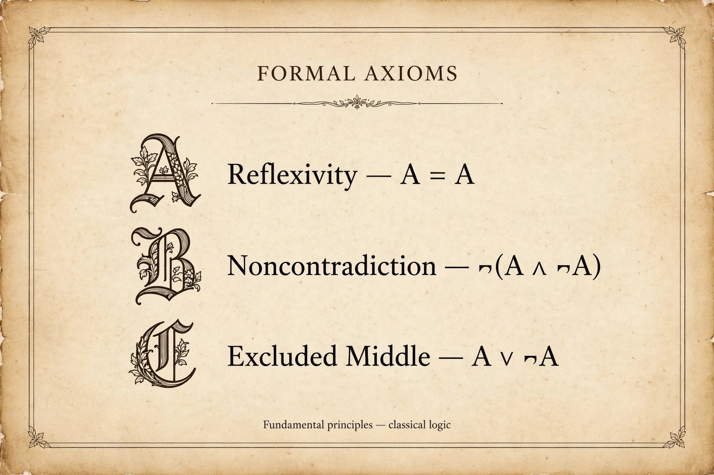

Zermelo–Fraenkel set theory

[Image: A stylised list of axioms on a parchment-like background, representing the ZFC axioms]
Zermelo–Fraenkel set theory, usually with the axiom of choice added and called ZFC, is the most widely used axiomatic foundation of mathematics. Its axioms restrict how sets can be formed, avoiding the paradoxes of informal set theory while still allowing essentially all ordinary mathematics to be developed.
Ernst Zermelo published the first version in 1908; Abraham Fraenkel and Thoralf Skolem strengthened it in the 1920s by adding the axiom schema of replacement.
The axioms
The axioms assert, among other things, that a set with given elements exists (including the empty set), that unions and power sets exist, that subsets defined by a property can be separated from a given set, and — by the axiom of foundation — that sets are built up in a well-founded hierarchy from the empty set.
Within ZFC, questions like the continuum hypothesis can still be undecidable, a limit mapped out by Gödel and Cohen.